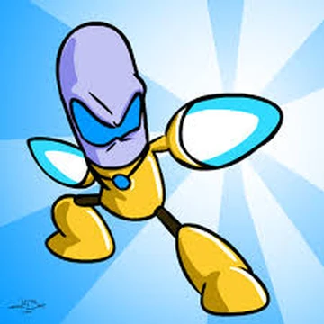
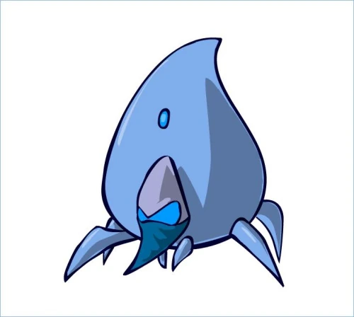
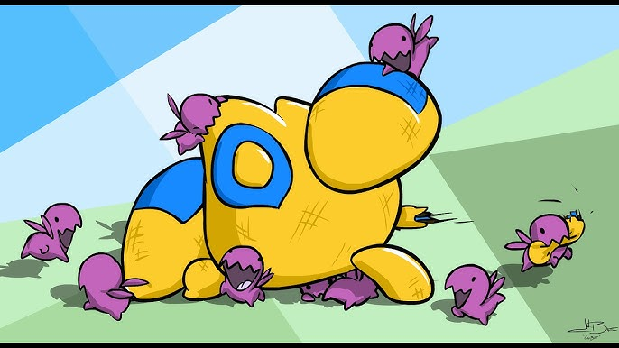
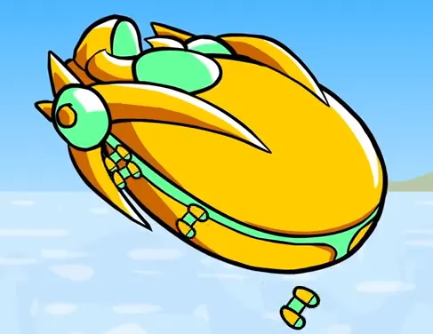

Los Protoss son una antigua civilización de guerreros psiónicos con tecnología extremadamente avanzada.

Guerrero cuerpo a cuerpo equipado con cuchillas psi.

Andador de combate capaz de teletransportarse.

Máquina de guerra especializada contra blindados.

Nave insignia capaz de desplegar interceptores.